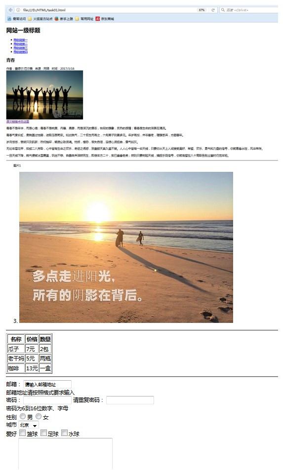

本章为百度前端技术学院学习任务一的学习记录，主要对html基本标签进行学习，并实现要求的效果。
本章要点：
- 任务及Demo地址
- html标签
- 总结
1.任务及Demo地址
1.1 任务目的
- 了解HTML的定义、概念、发展简史
- 掌握常用HTML标签的含义、用法
- 能够基于设计稿来合理规划HTML文档结构
- 理解语义化，合理地使用HTML标签来构建页面
1.2 任务要求的效果图

1.3 完成的效果图

1.4代码地址
代码已上传至github中，具体地址如下：
https://github.com/xuwei1991/Test
2.html标签
html中文名为超文本标记语言，是一种解释性语言，主要是由标签组成，具体用到和涉及的标签总结了以下，如下：
2.1 常用到的单标签
单标签单个使用，不用成对12<br> 换行<hr> 水平分割线
2.2 常用的双标签
双标签成对出现，闭合标签加斜杠1234<div></div> 块标签<h1></h1> 标题标签，从h1到h6，对应的加粗和变大<p></p> 段落标签<a href=”去往的路径” title=”提示文本” target=”_self | _blank”>链接文本</a>
2.3 列表标签
列表分为无序列表和有序列表，标签分别如下：
|
|
2.4 表格标签
表格标签是用来设置表格的，也可以用来页面布局，主要格式如下
|
|
2.5 表单标签
表单标签有文本输入框，密码框，单选框，多选框，下拉列表，文本区域，提交按钮，重置按钮等组成。
|
|
3.总结
通过基础知识的学习和完成任务一，对html的标签使用有了基本的了解。